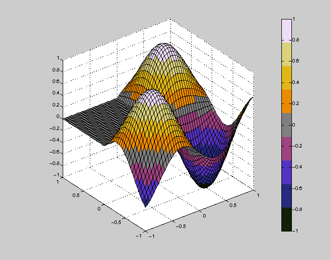
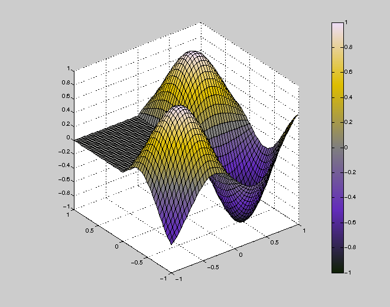
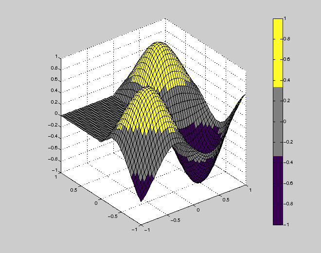
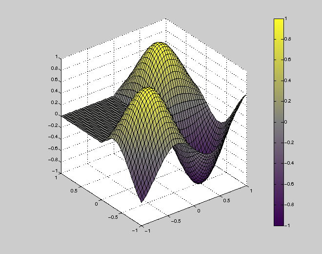
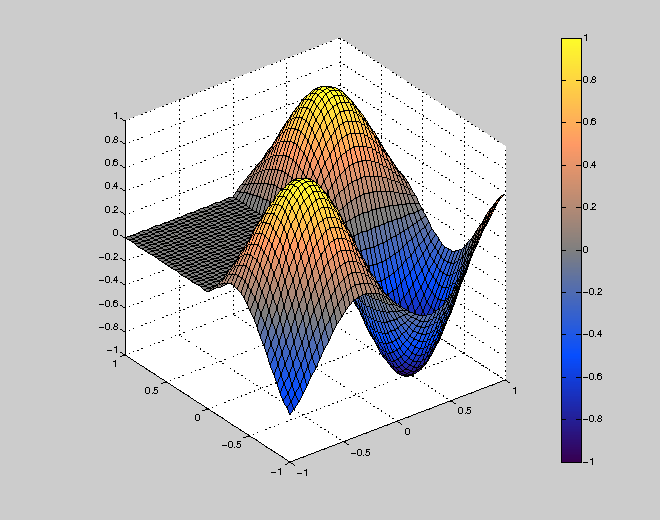
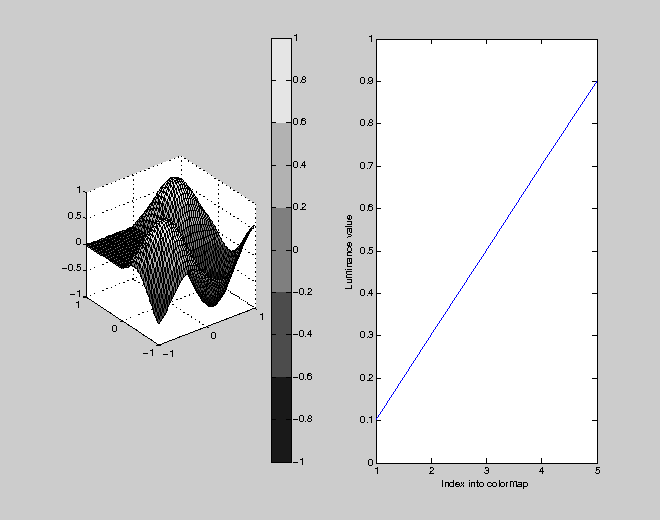
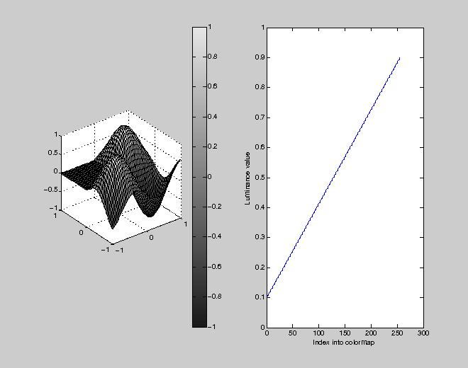

Find a bipolar colormap, linear in grayscale, close to a template map.
Contents
Linearity in gray is important for a colormap to look reasonable when printed in grayscale ("black and white"), but note that precise linearity depends on the particular (non-unique) choice for conversion from RGB values to grayscale brightness/luminance, which would ideally be (printing-) device-dependent in this context, and using ICC color profiles, etc. In practice, we use a simpler conversion, like rgb2gray, (see code comments in colormap_optimization for further details).
We explore a range of template colormaps, but note that others could be better still... In particular, a colormap "dusk" has recently been added to real2rgb (see below), which I have not had time to investigate... Another area for future work would be a CIELAB-based investigation, see:
http://www.mathworks.com/matlabcentral/fileexchange/11037-lab-color-scale
http://en.wikipedia.org/wiki/Lab_color_space
CMRmap from Carey Rappaport
http://www.mathworks.com/matlabcentral/fileexchange/2662
cmr = [
0 0 0
0.1500 0.1500 0.5000
0.3000 0.1500 0.7500
0.6000 0.2000 0.5000
1.0000 0.2500 0.1500
0.9000 0.5000 0
0.9000 0.7500 0.1000
0.9000 0.9000 0.5000
1.0000 1.0000 1.0000
];
cmr = colormap_optimization(cmr); display(cmr)
colormap_visualization(cmr, 1)
Optimization terminated.
cmr =
0.0666 0.1311 0.0244
0.1577 0.1651 0.5028
0.3260 0.2011 0.7595
0.6313 0.2616 0.5115
0.5000 0.5000 0.5000
0.9233 0.5459 0.0086
0.8843 0.7192 0.0943
0.8627 0.8266 0.4863
0.9334 0.8689 0.9756
 This is nice, but I would argue it is perceptually asymmetric in that there is a relatively smooth transition in the positive half, while the negative half has a more distinct mauve band around -0.2 to -0.3.
Thermal from Oliver Woodford's real2rgb
http://www.mathworks.com/matlabcentral/fileexchange/23342
therm = thermal(inf); display(therm) therm = colormap_optimization(therm); display(therm) colormap_visualization(therm, 1)
therm =
0 0 0
0.3000 0 0.7000
1.0000 0.2000 0
1.0000 1.0000 0
1.0000 1.0000 1.0000
Optimization terminated.
therm =
0.0666 0.1311 0.0244
0.3886 0.1743 0.7325
0.5000 0.5000 0.5000
0.8699 0.7441 0
0.9334 0.8689 0.9756
 I think this is a really nice bipolar colormap. My only minor quibble is that the off-white and off-black ends are not very appealing (to me). Note that they are pure white and pure black in Oliver's original thermal scheme, but I don't like that, since I want hardcopy to be distinguished from any black lines or text labels and from a white background.
Based on recommendations in Brewer (1996), but with gray central color
http://www.ingentaconnect.com/content/maney/caj/1996/00000033/00000002/art00002
brew1 = [
0.2500 0 0.3333 % purple
0.5000 0.5000 0.5000 % grey
1.0000 1.0000 0.1667 % yellow
];
brew1 = colormap_optimization(brew1); display(brew1)
colormap_visualization(brew1, 1)
Optimization terminated.
brew1 =
0.2157 0 0.3207
0.5000 0.5000 0.5000
0.9944 0.9891 0.1647
  Although academically well-motivated, I find the single-color transitions away from the origin don't seem to make as good use of color to aid visualisation compared to some of the other maps here.
Based on my adaption of Brewer's (1996) recommendations
with a neutral central colour, and two colours on each side, which I feel better discriminates between values within each of the two halves. Brewer (1996) considers issues such as colorblindness, etc. She recommends (separately) blue-red and purple-yellow schemes (but not blue-purple or red-yellow). The following seems like a reasonable compromise given that Brewer's table 2 shows no ideal paths through four colors (only a few ideal color-pairs, which sadly cannot be linked up).
brew2 = [
0.2500 0 0.3333 % purple
0.0000 0.2500 1.0000 % blue
0.5000 0.5000 0.5000 % grey
1.0000 0.2500 0.3333 % red
1.0000 1.0000 0.1667 % yellow
];
brew2 = colormap_optimization(brew2); display(brew2)
brew2fine = colormap_visualization(brew2, 1);
Optimization terminated.
brew2 =
0.2157 0 0.3207
0.0291 0.3072 1.0000
0.5000 0.5000 0.5000
1.0000 0.6035 0.3992
0.9944 0.9891 0.1647
 I am probably biased, but I think the two-color transitions here are helpful, and there is reasonable (though not perfect) perceptual symmetry between the orange-yellow and blue-purple transitions (if anything, the purple transitions a little too sharply near the end, around -0.95). It could undoubtedly be improved further, but seems good enough to me...
Check linearity in grayscale luminance of raw and interpolated maps
colormap_visualization(brew2, 2) colormap_visualization(brew2fine, 2) 
See also: colormap_visualization, colormap_optimization, bipolar
Example: map = bipolar(m, 0.5); % (gives the optimized brew2 that we get here)
Copyright 2009 Ged Ridgway at gmail com